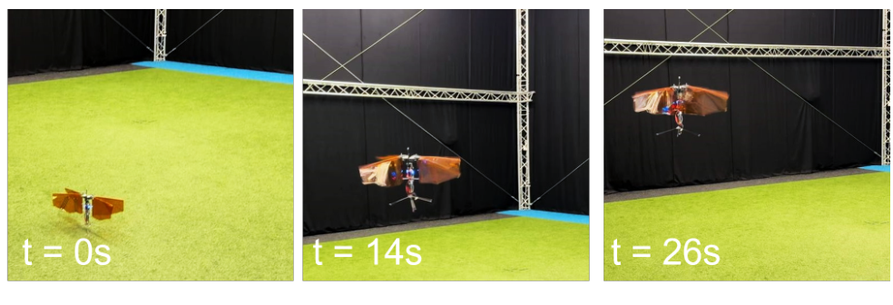
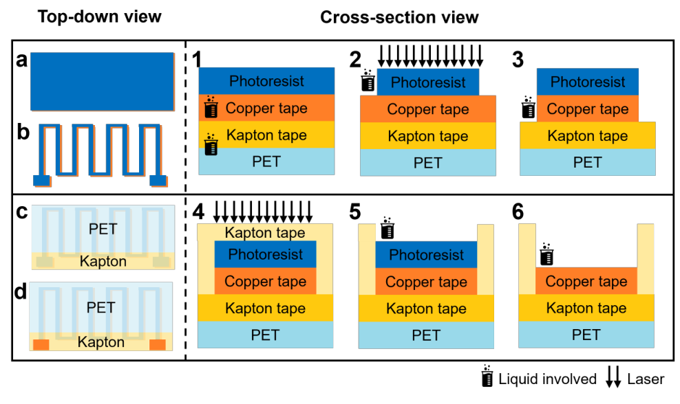
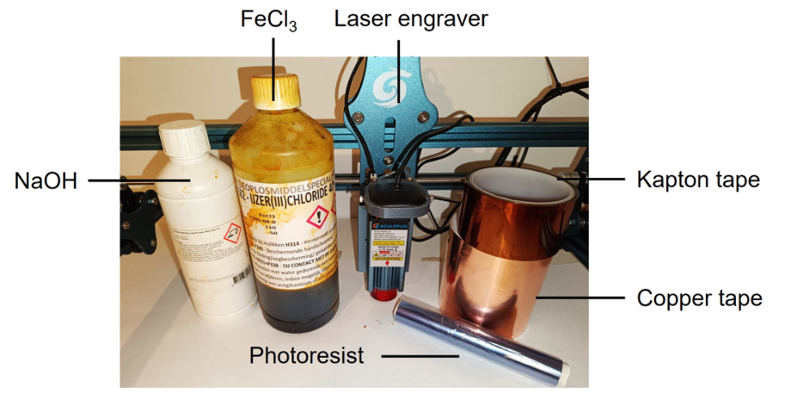
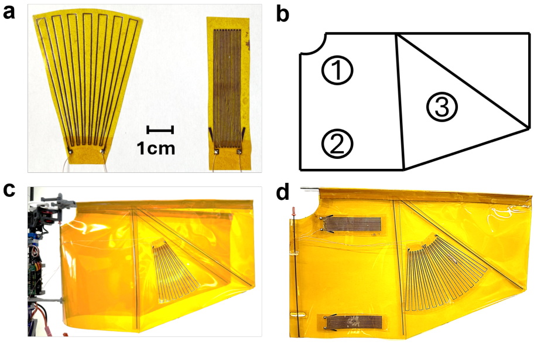
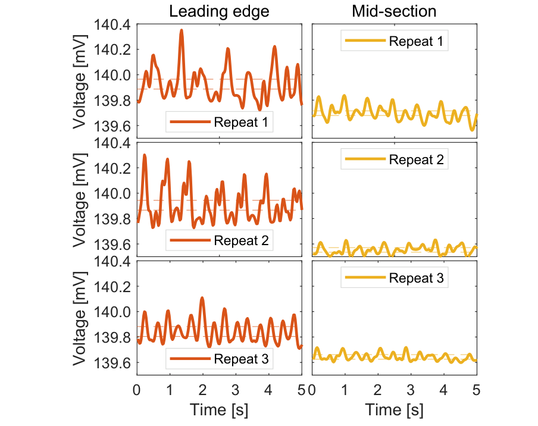
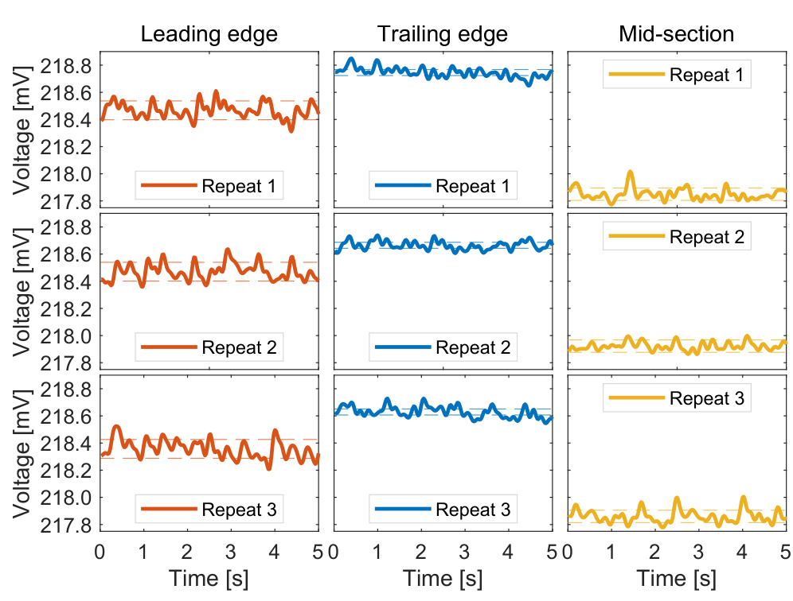

FIG. 1
先证明换成薄膜翼后还能飞
Fig. 1 是平台可行性证据：软翼必须同时满足加工兼容和飞行承载。后续传感实验使用的是在这一平台基础上制作的功能翼。

这篇短文的目标很实际：让没有复杂微加工条件的机器人实验室，也能在可飞行的柔性机翼上布置应变片。作者采用铜胶带、Kapton、干膜光刻胶和消费级激光设备制作两种图案，再通过分压电路读取低频扑动引起的电压变化。其贡献在可制作、可贴附和可测，而完整应变标定与飞行闭环留给了后续研究。
阅读依据：TU Delft 开放仓储的作者接收稿，共 5 页（1 页仓储封面＋4 页论文），完整解读 Fig. 1–6。仓储确认年份为 2024，Workshop 举办于 2024-05-13；该活动日期不冒充精确发表日期。公开仓储及本轮 SPIS 检索均指向同一作者稿，未核实独立正式版或 DOI。
作者把柔性电路板的制造思想简化成一条低门槛流程：在 Kapton 胶带上层压铜胶带和干膜光刻胶，用激光曝光出应变图案，显影和刻蚀后加保护层，再打开焊盘。完成的小应变片可从临时 PET 支撑上剥下，贴到 50 μm Kapton 机翼的不同位置。铜线路受形变时电阻变化，经有源分压读出为电压周期波动。
Fig. 1 是平台可行性证据：软翼必须同时满足加工兼容和飞行承载。后续传感实验使用的是在这一平台基础上制作的功能翼。

这张图是整篇最值得复用的部分。左侧是俯视图，右侧是截面；1–3 形成铜电阻，4–6 解决保护和电连接。

本图展示实际使用的工具、试剂与胶带。它支持普通实验室可接近的工艺路线，但不是完整成本或良率评估。

作者把图案和传感位置都变成可调整变量。实际示例以小型独立片转贴为主，适合快速探索翼面哪个位置产生更明显信号。

这张图证明“在扑动时读到可重复的电信号”。纵轴是电压，不是已校准的应变、弯曲角或空气动力。

第二种图案体积紧凑，得以覆盖三个测试位置。其意义是同一流程能制备另一种可用形状，尚不足以判定哪种设计最优。

本页仅针对这一篇论文独立分析。原文结果、作者转述与本页推算/建议已分别标明。原始 PDF 不随公开网页分发。
← 返回书架